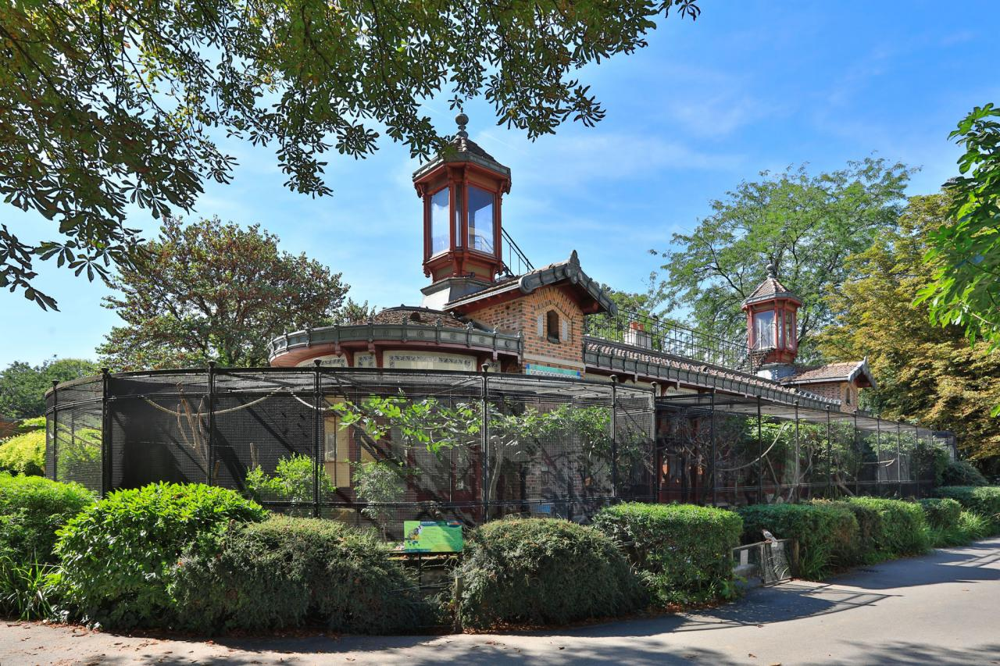
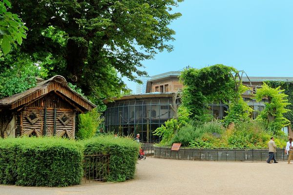
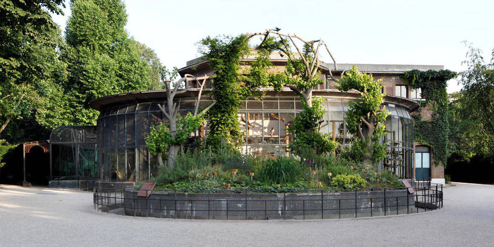

Ménagerie
Zoo du jardin des plantes
Présentation des lieux
La Ménagerie, le zoo du Jardin des Plantes, est un vaste espace arboré de plusieurs hectares où la nature est partout présente. Les enclos et les bâtiments où sont logés les animaux, se découvrent au détour des allées, selon un libre parcours auquel on accède par deux entrées depuis les allées du Jardin des Plantes.


